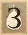

десь
представлен список сутт, сгруппированных по той или
иной тематике. Представленный список тем охватывает
не все, но только самые основные темы, которые затрагиваются
в каноне. Перечислены только те сутты, в которых содержится
хотя бы до какой-то степени новая информация или уникальные
нюансы на конкретную тему. Те сутты, которые целиком
или почти во всём дублируют другие тематические, не
перечисляются. Некоторая сутта может охватывать сразу
несколько тем, поэтому может упоминаться несколько раз.
Жирным шрифтом выделены целые группы сутт на одну и
ту же тему. Список будет пополняться по мере возможности.
Анапанасати
[МН 10]
-- [МН
62] -- [МН
118] -- [МН
119]
[АН 1.301]
-- [АН
5.96] -- [АН
5.97] -- [АН
5.98] -- [АН
9.1]
[СН 54]
Араханты
[МН
1] -- [МН
7] -- [МН
11] -- [МН
29] -- [МН
35] -- [МН
37] -- [МН
39] -- [МН
70]
-- [МН
71] -- [МН
76]
[МН
78] -- [МН
86] -- [МН
105] -- [МН
108] -- [МН
112] -- [МН
116] -- [МН
124] -- [МН
140] -- [МН
144]
[МН
147]
[АН
2.31] -- [АН
2.57] -- [АН
3.13] -- [АН
3.25] -- [АН
3.70] -- [АН
3.86] -- [АН
3.115] -- [АН
4.170]
[АН 4.195]
-- [АН
5.31] -- [АН
5.93] -- [АН
6.49] -- [АН
6.55] -- [АН
6.66] -- [АН
6.76] -- [АН
6.83]
[АН
8.28] -- [АН
9.7] -- [АН
9.8] -- [АН
9.25] -- [АН
10.86] -- [АН
10.90]
[СН
1.28] -- [СН
2.14] -- [СН
2.15] -- [СН
4.23] -- [СН
5.3] -- [СН
5.4] -- [СН
5.5] -- [СН
6.3] -- [СН
8.7]
[СН
9.10] -- [СН
12.32] -- [СН
12.51] -- [СН
12.70] -- [СН
17.30] -- [СН
21.2] -- [СН
21.4] -- [СН
21.5]
[СН
21.6] -- [СН
22.76] -- [СН
22.110] -- [СН
22.122] -- [СН
28.1] -- [СН
35.69] -- [СН
35.83]
[СН
35.134] -- [СН
36.6] -- [СН
45.26] -- [СН
46.3] -- [СН
47.27] -- [СН
48.13] -- [СН
51.15]
[СН
55.52] -- [СН
55.54]
Аскеза
[МН
3] -- [МН
12] -- [МН
14] -- [МН
21] -- [МН
26] -- [МН
32] -- [МН
36] -- [МН
40] -- [МН
45]
-- [МН
51] [МН
57] -- [МН
65] -- [МН
66] -- [МН
77]
-- [МН
101] -- [МН
139]
[АН 1.378]
-- [АН
1.379-381] -- [АН
3.93] -- [АН
3.156] -- [АН
4.196] -- [АН
4.198] -- [АН
5.182-190]
[АН
6.59] -- [АН
10.94]
[СН 1.10]
-- [СН
1.17] -- [СН
2.1] -- [СН
4.1] -- [СН
16.5] -- [СН
20.8] -- [СН
42.12]
Безличностность
[МН
1] -- [МН
11] -- [МН
22] -- [МН
28] -- [МН
35]
-- [МН
62] -- [МН
64] -- [МН
106] -- [МН
112]
[МН
144] -- [МН
146] -- [МН
148]
[АН 3.136]
-- [АН
4.181] -- [АН
6.100] -- [АН
6.104] -- [АН
7.49]
[СН 5.9]
-- [СН
5.10] -- [СН
12.12] -- [СН
12.15] -- [СН
22.14] -- [СН
22.17] -- [СН
22.20] -- [СН
22.33]
[СН
22.59] -- [СН
22.95] -- [СН
35.85] -- [СН
35.139] -- [СН
35.234]
Будда
[МН
1] -- [МН
4] -- [МН
12] -- [МН
14] -- [МН
19] -- [МН
22]
-- [МН
26] -- [МН
27] -- [МН
35] -- [МН
36] [МН
47]
-- [МН
49] -- [МН
50] -- [МН
51] -- [МН
53] -- [МН
58] -- [МН
68] -- [МН
71] -- [МН
75] -- [МН
77] [МН
81] -- [МН
83] -- [МН
86] -- [МН
88] -- [МН
89] --
[МН
91] -- [МН
92] -- [МН
95] -- [МН
103]
[МН
105] -- [МН
108] -- [МН
115] -- [МН
122] -- [МН
123] -- [МН
137] -- [МН
140] -- [МН
142]
[АН 1.170]
-- [АН
1.171-174] -- [АН
1.277] -- [АН
1.279] -- [АН
2.14] -- [АН
2.55] -- [АН
2.56] -- [АН
3.15] [АН
3.35] -- [АН
3.39] -- [АН
3.63] -- [АН
3.64] -- [АН
3.125] -- [АН
3.126] -- [АН
4.8] -- [АН
4.24]
[АН 4.36]
-- [АН
4.77] -- [АН
4.87] -- [АН
4.111] -- [АН
4.127] -- [АН
5.99] -- [АН
5.180] -- [АН
5.196]
[АН
6.62] -- [АН
6.64] -- [АН
7.50] -- [АН
8.64] -- [АН
8.69] -- [АН
8.85] -- [АН
9.4] -- [АН
9.20]
[АН 10.21]
-- [АН
10.95]
[СН
1.30] -- [СН
1.38] -- [СН
4.13] -- [СН
6.1] -- [СН
6.2] -- [СН
6.15] -- [СН
7.13] -- [СН
12.65]
[СН
22.58] -- [СН
22.96] -- [СН
35.83] -- [СН
35.103] -- [СН
35.117] -- [СН
42.7] -- [СН
42.13]
[СН
45.139] -- [СН
47.9] -- [СН
47.12] -- [СН
47.14] -- [СН
48.41] -- [СН
51.10] -- [СН
54.8] -- [СН
54.11]
[СН
56.23] -- [СН
56.31]
Благие
качества
[МН 2]
-- [МН
3] -- [МН
5] -- [МН
8] -- [МН
39] -- [МН
40]
-- [МН
43] -- [МН
44] -- [МН
48] -- [МН
68]
[МН
85] -- [МН
110] -- [МН
135] -- [МН
145]
[АН 1.59]
-- [АН
1.71] -- [АН
1.72] -- [АН
1.73] -- [АН
1.75] -- [АН
1.76] -- [АН
1.307] -- [АН
2.9]
[АН 2.119]
-- [АН
3.65] -- [АН
3.69] -- [АН
3.78] -- [АН
4.162] -- [АН
5.2] -- [АН
5.86] -- [АН
5.101]
[АН 6.79]
-- [АН
6.80] -- [АН
7.4] -- [АН
7.34] -- [АН
7.67] -- [АН
7.70] -- [АН
7.71] -- [АН
8.81]
[АН
10.1] -- [АН
10.2] -- [АН
10.8] -- [АН
10.17] -- [АН
10.53] -- [АН
10.106]
[СН 1.46]
-- [СН
1.52] -- [СН
42.1] -- [СН
45.1] -- [СН
45.4] -- [СН 46]
-- [СН 47.21]
-- [СН
48.10]
[СН 48.43]
-- [СН
48.50] -- [СН
48.51] -- [СН
48.52] -- [СН
48.54] -- [СН
54.13] -- [СН
55.24] -- [СН
55.38]
Божества
[МН
1] -- [МН
12] -- [МН
23] -- [МН
26] -- [МН
31]
-- [МН
36] -- [МН
37] -- [МН
41] -- [МН
49] -- [МН
53] [МН
57] -- [МН
60] -- [МН
65] -- [МН
79] -- [МН
90] -- [МН
97] -- [МН
100] -- [МН
120] -- [МН
123]
[МН
127] -- [МН
134] -- [МН
143]
[АН 1.281-283]
-- [АН
2.36] -- [АН
3.23] -- [АН
3.37] -- [АН
3.40] -- [АН
3.70] -- [АН
3.116] -- [АН
3.127]
[АН 4.33]
-- [АН
4.123] -- [АН
4.124] -- [АН
4.171] -- [АН
4.191] -- [АН
5.100] -- [АН
5.166] -- [АН
5.170] [АН
5.197] -- [АН
5.228] -- [АН
6.34] -- [АН
7.44] -- [АН
7.53] -- [АН
7.55] -- [АН
7.56] -- [АН
7.69]
[АН
8.22] -- [АН
8.42] -- [АН
8.46] -- [АН
8.64] -- [АН
9.19] -- [АН
9.21] -- [АН
9.24] -- [АН
11.13]
[СН 1.11]
-- [СН
1.35] -- [СН
1.37] -- [СН
2.29] -- [СН
5.7] -- [СН
6.4] -- [СН
6.6] -- [СН
11.3] -- [СН
11.4]
[СН
11.5] -- [СН
11.6] -- [СН
11.9] -- [СН
11.10] -- [СН
11.12] -- [СН
11.13] -- [СН
11.22] -- [СН
11.23]
[СН
20.6] -- [СН
22.78] -- [СН
31.1] -- [СН
32.1] -- [СН
32.53] -- [СН
35.248] -- [СН
40.10] -- [СН
41.10]
[СН
48.57] -- [СН
55.36] -- [СН
56.41]
Благородные
ученики
[МН
1] -- [МН
2] -- [МН
6] -- [МН
7] -- [МН
10] -- [МН
11] -- [МН
14] -- [МН
22]
-- [МН
34] -- [МН
48]
[МН
52] -- [МН
56] -- [МН
64] -- [МН
65] -- [МН
68]
-- [МН
70] -- [МН
73] -- [МН
81] -- [МН 91]
-- [МН
115] [МН
140] -- [МН
141] -- [МН
142] -- [МН
143] -- [МН
146]
[АН 1.268]
-- [АН
1.269] -- [АН
1.270] -- [АН
1.271-276] -- [АН
2.36] -- [АН
3.12] -- [АН
3.21] -- [АН
3.25] [АН
3.75] -- [АН
3.86] -- [АН
3.87] -- [АН
3.94] -- [АН
3.116] -- [АН
3.127] -- [АН
4.5] -- [АН
4.76]
[АН
4.123] -- [АН
4.124] -- [АН
4.125] -- [АН
4.131] -- [АН
4.169] -- [АН
4.176] -- [АН
4.241] -- [АН
5.179] [АН
5.260-263] -- [АН
6.16] -- [АН
6.34] -- [АН
6.44] -- [АН
6.56] -- [АН
6.65] -- [АН
6.86] -- [АН
6.87]
[АН
6.88] -- [АН
6.91] -- [АН
6.92] -- [АН
6.93] -- [АН
6.94] -- [АН
6.95] -- [АН
6.98] -- [АН
6.119]
[АН 6.120-139]
-- [АН
7.14] -- [АН
7.15] -- [АН
7.16] -- [АН
7.53] -- [АН
7.54] -- [АН
7.55] -- [АН
7.56]
[АН
7.60] -- [АН
8.6] -- [АН
8.12] -- [АН
8.21] -- [АН
8.22] -- [АН
8.24] -- [АН
9.9] -- [АН
9.12] -- [АН
9.20]
[АН
9.22] -- [АН
10.46] -- [АН
10.63] -- [АН
11.11]
[СН
1.7] -- [СН
2.24] -- [СН
6.13] -- [СН
11.16] -- [СН
12.27] -- [СН
12.33] -- [СН
12.41] -- [СН
12.49]
[СН
12.61] -- [СН
12.68] -- [СН
13] -- [СН
17.23] -- [СН
17.24] -- [СН
22.89] -- [СН
22.109] -- [СН
22.122]
[СН 25] --
[СН
35.74] -- [СН
37.34] -- [СН
41.8] -- [СН
41.9] -- [СН
47.29] -- [СН
48.8] -- [СН
48.13]
[СН
48.14] -- [СН
48.15] -- [СН
48.18] -- [СН
48.24] -- [СН
48.50] -- [СН
48.53] -- [СН
55]
Брахмавихары
[МН
7] -- [МН
21] -- [МН
40] -- [МН
43] -- [МН
48] --
[МН
50] -- [МН
52] -- [МН
62] -- [МН
97] -- [МН
104]
[МН
127]
[АН 1.17]
-- [АН
1.53] -- [АН
3.63] -- [АН
4.67] -- [АН
4.125] -- [АН
4.126] -- [АН
5.105] -- [АН
5.161]
[АН
6.13] -- [АН
7.66] -- [АН
8.1] -- [АН
8.63] -- [АН
10.219] -- [АН
11.15]
[СН 20.3]
-- [СН
20.4] -- [СН
20.5] -- [СН
41.7] -- [СН
42.8] -- [СН
42.13] -- [СН
46.54]
Брахманизм
[МН
7] -- [МН
51] -- [МН
91] -- [МН
93] -- [МН
95] --
[МН
96] -- [МН
98] -- [МН
99] -- [МН
100]
[АН 3.58]
-- [АН
3.60] -- [АН
5.192] -- [АН
6.52] -- [АН
7.47] -- [АН
10.119] -- [АН
10.176]
[СН 1.37]
-- [СН
6.3] -- [СН
7.9] -- [СН
7.18] -- [СН
7.21] -- [СН
35.132] -- [СН
42.6] -- [СН
55.12]
Варны
[МН
81] -- [МН
84] -- [МН
90] -- [МН
93] -- [МН
96]
[АН
5.134] -- [АН
5.135] -- [АН
5.191] -- [АН
5.192] -- [АН
6.52]
[СН 3.1]
-- [СН
7.7]
Вера
[МН
7] -- [МН
27] -- [МН
47] -- [МН
60] -- [МН
67] --
[МН
68] -- [МН
70] -- [МН
76] -- [МН
85] -- [МН
95]
[МН
97]
[АН 3.21]
-- [АН
3.41] -- [АН
3.42] -- [АН
4.118] -- [АН
5.6] -- [АН
5.34] -- [АН
5.38] -- [АН
5.157]
[АН
6.30] -- [АН
6.45] -- [АН
11.14]
[СН 1.36]
-- [СН 1.51]
-- [СН
1.59] -- [СН
1.73] -- [СН
1.79] -- [СН
2.23] -- [СН
3.11] -- [СН
3.21]
[СН 3.24]
-- [СН
3.25] -- [СН
4.22] -- [СН
7.11] -- [СН
9.2] -- [СН
10.12] -- [СН
11.14] -- [СН
12.23]
[СН
12.41] -- [СН
12.68] -- [СН
14.17] -- [СН
16.7] -- [СН 25]
-- [СН
35.153] -- [СН
37.5] -- [СН
37.15]
[СН 40.10]
-- [СН
41.8] -- [СН
42.8] -- [СН
42.12] -- [СН
45.4] -- [СН
47.12] -- [СН
48.8] -- [СН
48.9]
[СН
48.42] -- [СН
48.44] -- [СН
48.50] -- [СН
48.52] -- [СН
55.40]
Воззрения
[МН
1] -- [МН
2] -- [МН
8] -- [МН
9] -- [МН
11] -- [МН
12] -- [МН
22] -- [МН
24] -- [МН
25] -- [МН
38]
[МН
41] -- [МН
43] -- [МН
44] -- [МН
45] -- [МН
48]
-- [МН
53] -- [МН
57] -- [МН
60] -- [МН
63] -- [МН
72] [МН
74] -- [МН
76] -- [МН
79] -- [МН
102] -- [МН
109] -- [МН
114] -- [МН
117] -- [МН
136]
[АН 1.268]
-- [АН
1.269] -- [АН
1.270] -- [АН
1.306] -- [АН
1.307] -- [АН
1.310] -- [АН
1.311] -- [АН
1.312] [АН
1.313] -- [АН
1.314] -- [АН
1.315] -- [АН
1.316] -- [АН
1.317] -- [АН
1.318] -- [АН
2.37] -- [АН
2.125] [АН
2.126] -- [АН
4.173] -- [АН
4.200] -- [АН
5.25] -- [АН
5.88] -- [АН
6.38] -- [АН
6.95] -- [АН
7.54]
[АН
7.55] -- [АН
10.29] -- [АН
10.93] -- [АН
10.96] -- [АН
10.104]
[СН 5.10]
-- [СН
6.4] -- [СН
12.15] -- [СН
12.17] -- [СН
12.20] -- [СН
12.35] -- [СН
12.48] -- [СН
22.1]
[СН
22.47] -- [СН
22.55] -- [СН
22.81] -- [СН
22.82] -- [СН
22.85] -- [СН
22.90] -- [СН
22.99] -- [СН
24.1]
[СН
35.156] -- [СН
41.3] -- [СН
42.2] -- [СН
42.3] -- [СН
42.8] -- [СН
42.9] -- [СН
42.13] -- [СН
44]
[СН 56.8]
-- [СН
56.37]
Восхваления
[МН
3] -- [МН
22] -- [МН
24] -- [МН
26] -- [МН
27] -- [МН
31] -- [МН
32] -- [МН
36] -- [МН
50] -- [МН
54] [МН
56] -- [МН
92] -- [МН
95] -- [МН
139]
[АН
1.187] -- [АН
2.48] -- [АН
2.134] -- [АН
4.68] -- [АН
4.100] -- [АН
4.129] -- [АН
4.176] -- [АН
6.42]
[АН 6.43]
-- [АН
10.30]
[СН 1.37]
-- [СН 1.45]
-- [СН
2.29] -- [СН
3.12] -- [СН
5.8] -- [СН
8.6] -- [СН
8.8] -- [СН
8.9] -- [СН
11.17]
[СН 17] --
[СН
35.116]
Джхана
и сосредоточение
[МН
4] -- [МН
8] -- [МН
13] -- [МН
14] -- [МН
19] -- [МН
25] -- [МН
26]
-- [МН
27] -- [МН
29] -- [МН
31] [МН
36] -- [МН
39]
-- [МН
43] -- [МН
44] -- [МН
45] -- [МН
52] -- [МН
54] -- [МН
59] -- [МН
64] -- [МН
66] [МН
68] -- [МН
69] -- [МН
77] -- [МН
78] -- [МН
79] -- [МН
102] --
[МН
105] -- [МН
106] -- [МН
111]
[МН
113] -- [МН
117] -- [МН
121] -- [МН
122] -- [МН
125] -- [МН
127] -- [МН
128] -- [МН
136] -- [МН
137]
[МН
138] -- [МН
139] -- [МН
140]
[АН 1.394]
-- [АН
1.395-397] -- [АН
2.71] -- [АН
2.72] -- [АН
2.73] -- [АН
2.76] -- [АН
2.163] -- [АН
3.19] [АН
3.32] -- [АН
3.58] -- [АН
3.63] -- [АН
3.90] -- [АН
3.94] -- [АН
3.101] -- [АН
3.102] -- [АН
3.116]
[АН 4.14]
-- [АН
4.30] -- [АН
4.38] -- [АН
4.41] -- [АН
4.77] -- [АН
4.94] -- [АН
4.123] -- [АН
4.124]
[АН 4.178]
-- [АН
4.190] -- [АН
4.200] -- [АН
4.246] -- [АН
5.26] -- [АН
5.27] -- [АН
5.28] -- [АН
5.29]
[АН
5.45] -- [АН
5.94] -- [АН
5.113] -- [АН
5.166] -- [АН
5.176] -- [АН
5.200] -- [АН
5.256] -- [АН
5.264]
[АН
6.13] -- [АН
6.24] -- [АН
6.28] -- [АН
6.29] -- [АН
6.42] -- [АН
6.60] -- [АН
6.64] -- [АН
6.70]
[АН 6.72]
-- [АН
6.73] -- [АН
6.74] -- [АН
6.77] -- [АН
7.67] -- [АН
7.69] -- [АН
8.30] -- [АН
8.63]
[АН 8.66]
-- [АН
9.31] -- [АН
9.33] -- [АН
9.34] -- [АН
9.35] -- [АН
9.36] -- [АН
9.37] -- [АН
9.38]
[АН 9.39]
-- [АН
9.41] -- [АН
9.42] -- [АН
10.6] -- [АН
10.25] -- [АН
10.29] -- [АН
10.72] -- [АН
10.99]
[АН 11.16]
[СН
2.7] -- [СН
2.11] -- [СН
4.23] -- [СН
6.15] -- [СН
12.70] -- [СН
14.11] -- [СН
17.30] -- [СН
21.1]
[СН
21.4] -- [СН
22.5] -- [СН
22.88] -- [СН
34] -- [СН
35.99] -- [СН
35.160] -- [СН
36.1] -- [СН
36.11]
[СН
36.19] -- [СН
36.31] -- [СН
40] -- [СН
41.6] -- [СН
41.7] -- [СН
41.8] -- [СН
41.9] -- [СН
45.8]
[СН 45.28]
-- [СН 46.2]
-- [СН 46.3]
-- [СН
46.54] -- [СН
47.9] -- [СН
47.10] -- [СН
48.8] -- [СН
48.9]
[СН
48.40] -- [СН
48.46] -- [СН
51.13] -- [СН
54.7] -- [СН
54.8] -- [СН
54.13]
Духи
[МН
6] -- [МН
12] -- [МН
79]
[АН 5.220]
-- [АН
10.177]
[СН 10.3]
-- [СН 10.5]
-- [СН
10.6] -- [СН
10.12] -- [СН
19] -- [СН
20.3] -- [СН
20.5]
Женщины
[МН
21] -- [МН
68] -- [МН
73] -- [МН
142]
[АН 1.235]
-- [АН
1.236-247] -- [АН
1.258] -- [АН
1.259-267] -- [АН
1.279-283] -- [АН
2.61] -- [АН
3.131] [АН
4.80] -- [АН
4.159] -- [АН
4.197] -- [АН
5.33] -- [АН
5.55] -- [АН
5.115] -- [АН
5.116] -- [АН
5.117]
[АН
5.229] -- [АН
5.230] -- [АН
7.51] -- [АН
7.63] -- [АН
8.17] -- [АН
8.18] -- [АН
8.49] -- [АН
8.51]
[СН 3.16]
-- [СН 5.2]
-- [СН 37]
-- [СН
55.39]
Зависимое
возникновение
[МН 9]
-- [МН
11] -- [МН
18] -- [МН
28] -- [МН
38] -- [МН
75] -- [МН
79]
-- [МН
115]
[АН
3.61] -- [АН
6.63] -- [АН
6.95] -- [АН
8.81]
[СН 5.9]
-- [СН
6.1] -- [СН 12]
-- [СН
14.3] -- [СН
14.5] -- [СН
14.8] -- [СН
14.10] -- [СН
14.12] -- [СН
22.5]
[СН
22.81] -- [СН
35.60] -- [СН
35.93] -- [СН
35.245] -- [СН
36.7] -- [СН
45.11] -- [СН
47.42] -- [СН
48.39]
Иные
духовные традиции
[МН
4] -- [МН
11] -- [МН
12] -- [МН
14] -- [МН
22] -- [МН
25] -- [МН
26] -- [МН
36] -- [МН
48] -- [МН
49]
[МН
56] -- [МН
57] -- [МН
58] -- [МН
71] -- [МН
72]
-- [МН
75] -- [МН
76] -- [МН
77] -- [МН
79] -- [МН
89] [МН
101] -- [МН
104] -- [МН
136]
[АН
1.319] -- [АН
3.61] -- [АН
3.65] -- [АН
3.70] -- [АН
3.74] -- [АН
3.93] -- [АН
3.126] -- [АН
3.137]
[АН 5.293]
-- [АН
5.294-302] -- [АН
6.57] -- [АН
9.38] -- [АН
10.78]
[СН 2.8]
-- [СН
2.30] -- [СН
3.1] -- [СН
22.60] -- [СН
22.62] -- [СН
35.103] -- [СН
41.8] -- [СН
42.8]
[СН 42.9]
-- [СН
44.9] -- [СН
46.52]
Камма
[МН
3] -- [МН
12] -- [МН
35] -- [МН
41] -- [МН
45] -- [МН
46] -- [МН
50] -- [МН
54] -- [МН
55] -- [МН
57] [МН
60] -- [МН
86] -- [МН
99] -- [МН
101] -- [МН
115] -- [МН
118] -- [МН
120] -- [МН
129] -- [МН
135]
[МН
136] -- [МН
142]
[АН
1.284] -- [АН
1.285] -- [АН
1.286] -- [АН
1.287] -- [АН
1.288] -- [АН
1.289] -- [АН
1.290] -- [АН
1.291]
[АН 1.292]
-- [АН
1.293] -- [АН
1.294] -- [АН
1.295] -- [АН
1.314] -- [АН
1.315] -- [АН
1.320] -- [АН
1.321] [АН
3.34] -- [АН
3.36] -- [АН
3.57] -- [АН
3.74] -- [АН
3.76] -- [АН
3.100] -- [АН
3.111] -- [АН
3.113]
[АН 4.31]
-- [АН
4.57] -- [АН
4.61] -- [АН
4.77] -- [АН
4.79] -- [АН
4.134] -- [АН
4.195] -- [АН
4.197]
[АН
4.233] -- [АН
5.45] -- [АН
5.57] -- [АН
5.148] -- [АН
6.18] -- [АН
6.39] -- [АН
6.49] -- [АН
6.62]
[АН
6.63] -- [АН
7.62] -- [АН
7.72] -- [АН
8.36] -- [АН
8.40] -- [АН
9.13] -- [АН
9.20] -- [АН
10.39]
[АН
10.40] -- [АН
10.47] -- [АН
10.88] -- [АН
10.104] -- [АН
10.174] -- [АН
10.176] -- [АН
10.177]
[АН
10.216] -- [АН
10.217] -- [АН
10.219]
[СН 1.22]
-- [СН
1.32] -- [СН
1.33] -- [СН
1.47] -- [СН
1.49] -- [СН
3.15] -- [СН
3.19] -- [СН
3.20]
[СН 3.21]
-- [СН
3.24] -- [СН
5.8] -- [СН
6.10] -- [СН
7.19] -- [СН
11.11] -- [СН
12.51] -- [СН
35.146]
[СН 36.21]
-- [СН
37.32] -- [СН
42.6] -- [СН
42.8] -- [СН
42.9] -- [СН
42.13] -- [СН
55.41]
Космология
[МН
1] -- [МН
12] -- [МН
41] -- [МН
49] -- [МН
50] -- [МН
57] -- [МН
60] -- [МН
120] -- [МН
129]
[МН
130]
[АН 3.36]
-- [АН
3.80] -- [АН
4.127] -- [АН
4.156] -- [АН
6.105] -- [АН
7.62] -- [АН
7.66] -- [АН
9.21]
[АН
10.62]
[СН
2.26] -- [СН
15.5] -- [СН
15.6] -- [СН
15.8] -- [СН
15.20] -- [СН
22.99] -- [СН
35.116] -- [СН
35.135]
[СН 36.4]
-- [СН
48.68] -- [СН
48.69] -- [СН
48.70] -- [СН
55.1] -- [СН
56.38] -- [СН
56.46]
Мара
[МН
25] -- [МН
49] -- [МН
50] -- [МН
106] -- [МН
120]
[АН 1.282]
-- [АН
4.15] -- [АН
9.39]
[СН 4] --
[СН 5] --
[СН
22.63] -- [СН
22.87] -- [СН
23.1] -- [СН
35.65] -- [СН
35.114] -- [СН
35.230]
[СН
35.240] -- [СН
35.243] -- [СН
46.43] -- [СН
47.7] -- [СН
51.10]
Монашеские
правила
[МН
6] -- [МН
57] -- [МН
65] -- [МН
66] -- [МН
67]
-- [МН
70] -- [МН
82] -- [МН
88]
[АН 1.151-159]
-- [АН
1.161-169] -- [АН
2.10] -- [АН
2.49] -- [АН
2.280] -- [АН
2.281-309] -- [АН
3.84]
[АН
3.86] -- [АН
3.91] -- [АН
3.107] -- [АН
4.50] -- [АН
4.244] -- [АН
4.245] -- [АН
5.225] -- [АН
7.23]
[АН
7.75] -- [АН
7.84] -- [АН
8.20] -- [АН
8.51] -- [АН
8.87] -- [АН
8.90] -- [АН
10.31] -- [АН
10.32]
[АН
10.43]
[СН 8.7]
-- [СН
11.24] -- [СН
12.17] -- [СН
16.11] -- [СН
16.13] -- [СН
20.10] -- [СН
35.133] -- [СН
42.10]
Непостоянство
[МН
10] -- [МН
13] -- [МН
22] -- [МН
49] -- [МН
106]
-- [МН
137] -- [МН
138] -- [МН
146] -- [МН
148]
[АН
3.47] -- [АН
4.33] -- [АН
5.48] -- [АН
6.102] -- [АН
7.16] -- [АН
7.66] -- [АН
8.6] -- [АН
9.20]
[СН
6.4] -- [СН
8.2] -- [СН
12.34] -- [СН
12.51] -- [СН
22.7] -- [СН
22.9] -- [СН
22.12] -- [СН
22.18]
[СН 22.21]
-- [СН
22.52] -- [СН
22.78] -- [СН
22.97] -- [СН
35.82] -- [СН
35.93] -- [СН
35.147]
[СН
35.186] -- [СН
36.7] -- [СН
36.11] -- [СН
47.13]
Ниббана
[МН
1] -- [МН
7] -- [МН
12] -- [МН
22] -- [МН
24]
-- [МН
26] -- [МН
31] -- [МН
44] -- [МН
59] -- [МН
60] [МН
64] -- [МН
66] -- [МН
72] -- [МН
102] -- [МН
105] -- [МН
106] -- [МН
107] -- [МН
111] -- [МН
115]
[МН
121] -- [МН
140]
[АН
3.47] -- [АН
3.55] -- [АН
3.90] -- [АН
4.34] -- [АН
4.173] -- [АН
6.101] -- [АН
8.19] -- [АН
9.34]
[АН 9.37]
-- [АН
9.38] -- [АН
9.47] -- [АН
10.6] -- [АН
10.7] -- [АН
11.7] -- [АН
11.8]
[СН 1.2]
-- [СН 1.27]
-- [СН
6.1] -- [СН
12.51] -- [СН
23.1] -- [СН
35.117] -- [СН
35.133] -- [СН
36.19]
[СН
36.31] -- [СН
38.1] -- [СН
43.1] -- [СН
43.13] -- [СН
45.6] -- [СН
48.53] -- [СН
54.8]
Осознанность
и охрана ума
[МН
2] -- [МН
10] -- [МН
12] -- [МН
19] -- [МН
20]
-- [МН
21] -- [МН
27] -- [МН
32] -- [МН
33] -- [МН
44] [МН
51] -- [МН
53] -- [МН
54] -- [МН
61] -- [МН
62] -- [МН
66] -- [МН
67] -- [МН
118] -- [МН
119]
[МН
122] -- [МН
123] -- [МН
152]
[АН 3.16]
-- [АН 4.11]
-- [АН
4.37] -- [АН
4.117] -- [АН
5.56] -- [АН
5.76] -- [АН
5.114] -- [АН
5.210]
[АН
6.1] -- [АН
6.17] -- [АН
6.29] -- [АН
8.9]
[СН
2.7] -- [СН
35.96] -- [СН
35.97] -- [СН
35.98] -- [СН
35.120] -- [СН
35.127] -- [СН
35.132]
[СН
35.134] -- [СН
35.240] -- [СН
35.244] -- [СН
35.246] -- [СН
35.247] -- [СН
36.7] -- [СН
46.3]
[СН
46.6] -- [СН
46.53] -- [СН
47] -- [СН
48.10] -- [СН
48.56] -- [СН
52.6] -- [СН
54.10]
Отшельничество
[МН
3] -- [МН
4] -- [МН
6] -- [МН
12] -- [МН
17] --
[МН
31] -- [МН
32] -- [МН
65] -- [МН
69] -- [МН
89]
[МН
107] -- [МН
122] -- [МН
150]
[АН 2.30]
-- [АН
4.138] -- [АН
4.262] -- [АН
5.78] -- [АН
5.80] -- [АН
5.110] -- [АН
5.114] -- [АН
5.181]
[АН
6.68] -- [АН
8.61] -- [АН
9.40] -- [АН
10.99]
[СН
11.9] -- [СН
22.6] -- [СН
35.63] -- [СН
35.100] -- [СН
22.81] -- [СН
45.11] -- [СН
54.11]
Памятования
[МН
68] -- [МН
151]
[АН 1.296]
-- [АН
1.297-305] -- [АН
3.70] -- [АН
5.57] -- [АН
5.77] -- [АН
5.78] -- [АН
6.10] -- [АН
6.25]
[АН
6.26] -- [АН
6.29] -- [АН
7.49] -- [АН
8.73] -- [АН
8.74] -- [АН
10.48] -- [АН
10.101] -- [АН
11.13]
[СН 11.3]
-- [СН
55.21] -- [СН
55.26]
Перерождение
[МН
12] -- [МН
16] -- [МН
22] -- [МН
38] -- [МН
41]
-- [МН
46] -- [МН
54] -- [МН
57] -- [МН
58] -- [МН
60] [МН
68] -- [МН
71] -- [МН
97] -- [МН
106] -- [МН
110] -- [МН
120] -- [МН
122] -- [МН
123] -- [МН
129]
[МН
135] -- [МН
143]
[АН 1.43]
-- [АН
1.44] -- [АН
1.290] -- [АН
1.291] -- [АН
1.292] -- [АН
1.293] -- [АН
1.294] -- [АН
1.295] [АН
1.312] -- [АН
1.313] -- [АН
1.333] -- [АН
2.1] -- [АН
2.36] -- [АН
3.10] -- [АН
3.18] -- [АН
3.23]
[АН
4.55] -- [АН
4.123] -- [АН
4.131] -- [АН
5.31] -- [АН
5.44] -- [АН
5.130] -- [АН
5.286] -- [АН
6.18]
[АН 6.44]
-- [АН
6.62] -- [АН
6.92] -- [АН
7.55] -- [АН
8.29] -- [АН
8.35] -- [АН
8.36] -- [АН
9.12]
[АН
10.65] -- [АН
10.216]
[СН
1.39] -- [СН
1.41] -- [СН
1.49] -- [СН
3.20] -- [СН
3.21] -- [СН
4.9] -- [СН
5.7] -- [СН
11.11]
[СН 11.14]
-- [СН
11.15] -- [СН
12.19] -- [СН
12.38] -- [СН
15] -- [СН
20.2] -- [СН
29.11] -- [СН
30.3]
[СН 31.2]
-- [СН
35.235] -- [СН
37.5] -- [СН
37.14] -- [СН
37.15] -- [СН
37.24] -- [СН
37.31] -- [СН
37.32]
[СН 40.10]
-- [СН
42.2] -- [СН
42.3] -- [СН
42.6] -- [СН
51.11] -- [СН
55.1] -- [СН
55.3] -- [СН
55.8]
[СН
55.13] -- [СН
55.24] -- [СН
55.54] -- [СН
56.21] -- [СН
56.35] -- [СН
56.47] -- [СН
56.48] -- [СН
56.61]
[СН 56.102]
Помехи
медитации
[МН
10] -- [МН
19] -- [МН
23] -- [МН
27] -- [МН
39]
-- [МН
99]
[АН 1.11]
-- [АН
1.12] -- [АН
1.13] -- [АН
1.14] -- [АН
1.15] -- [АН
1.16] -- [АН
1.17] -- [АН
1.18]
[АН 1.19]
-- [АН
1.20] -- [АН
1.45] -- [АН
3.101] -- [АН
3.102] -- [АН
3.130] -- [АН
5.51] -- [АН
6.42]
[АН 6.60]
-- [АН
6.77] -- [АН
7.61] -- [АН
10.72] -- [АН
11.9]
[СН
1.16] -- [СН
9.11] -- [СН
46.2] -- [СН
46.33] -- [СН
46.51] -- [СН
46.52] -- [СН
46.55]
Последовательность
в практике
[МН
4] -- [МН
24] -- [МН
27] -- [МН
39] -- [МН
40] -- [МН
51]
-- [МН
65] -- [МН
70] -- [МН
107] -- [МН
125] [МН
149]
[АН 3.94]
-- [АН
5.21] -- [АН
5.180] -- [АН
6.57] -- [АН
8.63] -- [АН
9.3] -- [АН
10.99]
[СН 47.3]
-- [СН
47.12] -- [СН
47.47]
Пророчества
[АН 3.80]
-- [АН
5.79] -- [АН
5.80] -- [АН
6.62] -- [АН
8.7] -- [АН
8.51]
[СН 20.7]
-- [СН
51.10]
Сверхспособности
[МН
4] -- [МН
6] -- [МН
12] -- [МН
16] -- [МН
26]
-- [МН
32] -- [МН
37] -- [МН
39] -- [МН
49] -- [МН
50] [МН
54] -- [МН
56] -- [МН
68] -- [МН
71] -- [МН
73] -- [МН
75] -- [МН
77] -- [МН
79] -- [МН
81] --
[МН
86] [МН
90] -- [МН
91] -- [МН
99] -- [МН
119]
-- [МН
127] -- [МН
136]
[АН 1.189-234]
-- [АН
3.40] -- [АН
3.58] -- [АН
3.60] -- [АН
3.80] -- [АН
3.129] -- [АН
3.130] -- [АН
4.189] [АН
5.28] -- [АН
5.67] -- [АН
5.68] -- [АН
5.100] -- [АН
6.17] -- [АН
6.34] -- [АН
6.41] -- [АН
6.62]
[АН 6.70]
-- [АН
8.64] -- [АН
8.69] -- [АН
8.70] -- [АН
10.21] -- [АН
10.84]
[СН
2.26] -- [СН
4.2] -- [СН
4.3] -- [СН
4.6] -- [СН
4.16] -- [СН
4.18] -- [СН
4.19] -- [СН
4.20] -- [СН
4.21]
[СН 4.22]
-- [СН
4.25] -- [СН
5.5] -- [СН
6.1] -- [СН
6.5] -- [СН
6.6] -- [СН
6.14] -- [СН
7.8] -- [СН
8.10]
[СН 8.12]
-- [СН
11.10] -- [СН
12.70] -- [СН
14.15] -- [СН
21.3] -- [СН
22.79] -- [СН
40] -- [СН
41.4]
[СН 41.10]
-- [СН 42.9]
-- [СН 47.28]
-- [СН 51]
-- [СН
52.6] -- [СН
52.11] -- [СН
52.12]
Словесное
поведение
[МН
8] -- [МН
21] -- [МН
24] -- [МН
27] -- [МН
41]
-- [МН
46] -- [МН
48] -- [МН
54] -- [МН
56] -- [МН
58] [МН
59] -- [МН
60] -- [МН
61] -- [МН
69] -- [МН
74] -- [МН
76] -- [МН
88] -- [МН
114] -- [МН
122]
[МН
128] -- [МН
139]
[АН 1.285]
-- [АН 1.288]
-- [АН
2.3] -- [АН
2.18] -- [АН
2.60] -- [АН
3.28] -- [АН
3.67] -- [АН
3.69]
[АН
3.124] -- [АН
4.22] -- [АН
4.42] -- [АН
4.73] -- [АН
4.82] -- [АН
4.140] -- [АН
4.164] -- [АН
4.183]
[АН
4.250] -- [АН
4.251] -- [АН
4.252] -- [АН
4.253] -- [АН
5.162] -- [АН
5.165] -- [АН
5.211] -- [АН
5.214] [АН
6.36] -- [АН
6.54] -- [АН
8.4] -- [АН
8.40] -- [АН
8.88] -- [АН
10.44] -- [АН
10.50] -- [АН
10.69]
[АН 10.85]
-- [АН
10.88] -- [АН
10.211]
[СН 1.22]
-- [СН
6.9] -- [СН
6.10] -- [СН
7.2] -- [СН
8.5] -- [СН
14.26] -- [СН
21.9] -- [СН
36.19]
[СН
55.7] -- [СН
56.10] -- [СН
56.74]
Созерцания
[МН
10] -- [МН
50] -- [МН
62] -- [МН
74] -- [МН
108]
-- [МН
118] -- [МН
119] -- [МН
121] -- [МН
122]
[АН 1.16]
-- [АН
1.575] -- [АН
1.576] -- [АН
1.577-582] -- [АН
1.583] -- [АН
2.6] -- [АН
4.124] -- [АН
4.126] [АН
4.163] -- [АН
4.177] -- [АН
5.30] -- [АН
5.69] -- [АН
5.121] -- [АН
6.29] -- [АН
6.117] -- [АН
7.16]
[АН 10.51]
-- [АН
10.60]
[СН
22.102] -- [СН
22.122] -- [СН
35.127] -- [СН
46.30] -- [СН
46.57] -- [СН
46.58] -- [СН
47] -- [СН
54]
[СН 54.9]
-- [СН
55.3]
Средства
к жизни
[МН 2]
-- [МН
3] -- [МН
12] -- [МН
17] -- [МН
27] -- [МН
55] -- [МН
69] -- [МН
78]
-- [МН
82] -- [МН
97] [МН
99] -- [МН
114] -- [МН
117]
-- [МН
151]
[АН
3.123] -- [АН
4.27] -- [АН
4.28] -- [АН
4.61] -- [АН
4.62] -- [АН
5.41] -- [АН
5.58] -- [АН
5.100]
[АН 5.177]
-- [АН 5.207]
-- [АН
5.224] -- [АН
5.225] -- [АН
5.227] -- [АН
5.228] -- [АН
8.12] -- [АН
8.54]
[АН 9.5]
-- [АН 9.6]
[СН 17.5]
-- [СН 20.9]
-- [СН
22.80] -- [СН
28.10] -- [СН
42.2] -- [СН
42.3] -- [СН
56.81]
Страдания
и смерть
[МН 9]
-- [МН
12] -- [МН
13] -- [МН
22] -- [МН
26] -- [МН
36] -- [МН
82] -- [МН
87]
-- [МН
97] -- [МН
101] [МН
129] -- [МН
130] -- [МН
135] -- [МН
137] -- [МН
141] -- [МН
143] -- [МН
144]
[АН 2.1]
-- [АН
3.36] -- [АН
3.39] -- [АН
3.49] -- [АН
3.62] -- [АН
3.109] -- [АН
4.113] -- [АН
4.184]
[АН
4.185] -- [АН
5.3] -- [АН
5.50] -- [АН
5.128] -- [АН
6.14] -- [АН
6.16] -- [АН
6.45] -- [АН
6.63]
[АН 7.74]
-- [АН
8.73] -- [АН
8.74] -- [АН
10.39] -- [АН
10.65] -- [АН
10.66]
[СН 1.12]
-- [СН
1.67] -- [СН
3.3] -- [СН
3.20] -- [СН
3.22] -- [СН
3.25] -- [СН
4.9] -- [СН
5.6] -- [СН
5.10]
[СН
7.10] -- [СН
12.2] -- [СН
12.43] -- [СН
14.34] -- [СН
14.36] -- [СН
15] -- [СН
22.19] -- [СН
22.30]
[СН 22.84]
-- [СН
22.87] -- [СН
22.99] -- [СН
22.104] -- [СН
35.81] -- [СН
35.87] -- [СН
35.94]
[СН
35.136] -- [СН
36.11] -- [СН
38.14] -- [СН
42.11] -- [СН
47.13] -- [СН
48.41] -- [СН
54.9] -- [СН
55.27]
[СН 55.54]
-- [СН
56.13] -- [СН
56.32] -- [СН
56.36]
Телесное
поведение
[МН
2] -- [МН
8] -- [МН
27] -- [МН
41] -- [МН
46]
-- [МН
54] -- [МН
56] -- [МН
61] -- [МН
69] -- [МН
88] [МН
114] -- [МН
135] -- [МН
136]
[АН
1.284] -- [АН
1.287] -- [СН
2.3] -- [АН
2.18] -- [АН
3.163] -- [АН
3.164] -- [АН
4.49] -- [АН
4.53]
[АН
4.99] -- [АН
4.115] -- [АН
4.192] -- [АН
4.198] -- [АН
5.129] -- [АН
5.162] -- [АН
5.178] -- [АН
5.218]
[АН 5.286]
-- [АН
6.18] -- [АН
6.44] -- [АН
7.47] -- [АН
7.50] -- [АН
8.40] -- [АН
10.99] -- [АН
10.211]
[СН 2.8]
-- [СН
12.41] -- [СН
14.25] -- [СН
17.11] -- [СН
35.88] -- [СН
42.8] -- [СН
55.7] -- [СН
55.24]
[СН 56.71]
Тело
и сознание
[МН 7]
-- [МН
9] -- [МН
10] -- [МН
13] -- [МН
18] -- [МН
19] -- [МН
20] -- [МН
23] -- [МН
28] -- [МН
36]
[МН
38] -- [МН
43] -- [МН
44] -- [МН
49] -- [МН
59]
-- [МН
74] -- [МН
77] -- [МН
78] -- [МН
106]
[МН
109] -- [МН
111] -- [МН
118] -- [МН
119] -- [МН
137] -- [МН
138] -- [МН
140] -- [МН
148] -- [МН
149]
[АН 1.1]
-- [АН
1.6] -- [АН
1.19] -- [АН
1.21] -- [АН
1.22] -- [АН
1.23] -- [АН
1.24] -- [АН
1.46] -- [АН
1.48] [АН
1.51] -- [АН
1.52] -- [АН
1.56] -- [АН
1.57] -- [АН
1.328] -- [АН
3.61] -- [АН
3.76] -- [АН
3.112]
[АН 4.110]
-- [АН 4.157]
-- [АН
5.160] -- [АН
6.62] -- [АН
6.96] -- [АН
7.38] -- [АН
7.44] -- [АН
7.51]
[АН
8.35] -- [АН
8.83] -- [АН
9.11] -- [АН
9.14] -- [АН
9.15] -- [АН
9.24] -- [АН
10.49]
[СН 1.61]
-- [СН 1.62]
-- [СН
4.19] -- [СН
5.9] -- [СН
5.10] -- [СН
10.1] -- [СН
11.20] -- [СН
12.2]
[СН 12.11]
-- [СН
12.19] -- [СН
12.37] -- [СН
12.38] -- [СН
12.39] -- [СН
12.61] -- [СН
12.62] -- [СН
12.63]
[СН
12.64] -- [СН
12.67] -- [СН
14.1] -- [СН
14.31] -- [СН
14.33] -- [СН
14.34] -- [СН
22] -- [СН
23.2]
[СН 35.23]
-- [СН
35.24] -- [СН
35.28] -- [СН
35.33] -- [СН
35.92] -- [СН
35.116] -- [СН
35.127]
[СН
35.133] -- [СН
35.236] -- [СН
38.15] -- [СН
45.27] -- [СН
46.53] -- [СН
48.36] -- [СН
48.40]
[СН
48.42] -- [СН
52.10] -- [СН
55.21]
Умственные
загрязнения
[МН 2]
-- [МН
3] -- [МН
4] -- [МН
5] -- [МН
7] -- [МН
8] -- [МН
9] -- [МН
11] -- [МН
14] -- [МН
15]
[МН 16]
-- [МН
19] -- [МН
20] -- [МН
21] -- [МН
40] -- [МН
44] -- [МН
45] -- [МН
48]
-- [МН
51] -- [МН
54] [МН
66] -- [МН
68] -- [МН
69]
-- [МН
106] -- [МН
110] -- [МН
113] -- [МН
114] --
[МН
122] -- [МН
135]
[МН
148]
[АН 1.1]
-- [АН
1.6] -- [АН
1.12] -- [АН
1.58] -- [АН
1.60] -- [АН
1.72] -- [АН
1.73] -- [АН
1.306] -- [АН
2.7] [АН
2.67] -- [АН
2.108] -- [АН
2.118] -- [АН
3.25] -- [АН
3.27] -- [АН
3.53] -- [АН
3.66] -- [АН
3.68]
[АН
3.69] -- [АН
3.71] -- [АН
3.92] -- [АН
3.132] -- [АН
4.9] -- [АН
4.66] -- [АН
4.110] -- [АН
4.158]
[АН
4.162] -- [АН
4.199] -- [АН
5.82] -- [АН
5.83] -- [АН
5.144] -- [АН
5.151] -- [АН
5.153] -- [АН
5.158] [АН
5.160] -- [АН
6.48] -- [АН
6.58] -- [АН
6.63] -- [АН
6.76] -- [АН
6.106] -- [АН
7.11] -- [АН
7.64]
[АН 9.23]
-- [АН
9.29] -- [АН
10.23] -- [АН
10.84]
-- [АН
10.105]
[СН 1.9]
-- [СН
1.25] -- [СН
1.63] -- [СН
2.3] -- [СН
3.2] -- [СН
8.1] -- [СН
8.3] -- [СН
8.4] -- [СН
12.2]
[СН 12.52]
-- [СН
14.13] -- [СН
16.7] -- [СН
17.5] -- [СН
17.21] -- [СН
20.1] -- [СН
22.49] -- [СН
22.83]
[СН 22.84]
-- [СН
22.100] -- [СН
22.101] -- [СН
22.113] -- [СН
27] -- [СН
35.63] -- [СН
35.79]
[СН
35.153] -- [СН
35.231] -- [СН
36.3] -- [СН
37.4] -- [СН
38.8] -- [СН
38.11] -- [СН
42.1] -- [СН
45.1]
[СН
46.24] -- [СН
46.55]
Усердие
[МН
5] -- [МН
15] -- [МН
32] -- [МН
36] -- [МН
45]
-- [МН
70] -- [МН
78] -- [МН
90] -- [МН
117]
[АН 1.18]
-- [АН
1.324] -- [АН
2.2] -- [АН
2.5] -- [АН
3.20] -- [АН
3.40] -- [АН
3.49] -- [АН
3.70]
[АН 3.95]
-- [АН
4.13] -- [АН
4.69] -- [АН
4.194] -- [АН
5.53] -- [АН
5.54] -- [АН
6.55] -- [АН
8.80]
[АН 9.3]
-- [АН
10.51] -- [АН
10.94]
[СН 1.3]
-- [СН
1.16] -- [СН
2.5] -- [СН
2.8] -- [СН
2.12] -- [СН
11.1] -- [СН
12.22] -- [СН
16.2] -- [СН
20.8]
[СН 46.53]
-- [СН
48.9] -- [СН
56.1] -- [СН
56.34]
Упадок
Дхаммы
[МН
65] -- [МН
104]
[АН
1.114] -- [АН
1.115] -- [АН
1.116-129] -- [АН
1.130] -- [АН
1.131-139] -- [АН
1.140] -- [АН
1.141-149] [АН
1.150] -- [АН
1.151-159] -- [АН
1.160] -- [АН
1.161-169] -- [АН
2.20] -- [АН
2.41] -- [АН
5.79]
[АН
5.80] -- [АН
5.154] -- [АН
5.155] -- [АН
5.156] -- [АН
5.201]
[СН
9.13] -- [СН
16.6] -- [СН
16.8] -- [СН
16.11] -- [СН
16.13] -- [СН
20.7] -- [СН
47.22]
Учёность
[МН
22] -- [МН
32] -- [МН
33] -- [МН
48] -- [МН
65]
-- [МН
69] -- [МН
91] -- [МН
103] -- [МН
108]
[АН 1.384]
-- [АН
2.24] -- [АН
2.47] -- [АН
3.20] -- [АН
4.6] -- [АН
4.7] -- [АН
4.22] -- [АН
4.102]
[АН
4.180] -- [АН
4.186] -- [АН
4.191] -- [АН
5.26] -- [АН
5.59] -- [АН
5.73] -- [АН
5.74] -- [АН
5.88]
[АН
5.155] -- [АН
5.157] -- [АН
5.166] -- [АН
5.169] -- [АН
5.231] -- [АН
6.51] -- [АН
7.6] -- [АН
7.68]
[АН
7.75] -- [АН
8.62] -- [АН
10.11]
[СН
16.6] -- [СН
20.7]
Хорошие
друзья
[МН
11] -- [МН
31] -- [МН
70] -- [МН
89] -- [МН
110]
-- [МН
128] -- [МН
141]
[АН 1.71]
-- [АН
3.26] -- [АН
3.27] -- [АН
3.135] -- [АН
4.31] -- [АН
4.109] -- [АН
4.204] -- [АН
4.242]
[АН
4.248] -- [АН
5.146] -- [АН
5.221] -- [АН
6.67] -- [АН
7.36] -- [АН
7.37] -- [АН
8.54] -- [АН
9.6]
[АН 11.13]
[СН 1.31]
-- [СН
3.18] -- [СН
14.16] -- [СН
14.18] -- [СН
45.2] -- [СН
45.3] -- [СН
45.49] -- [СН
46.12]
Чувственные
удовольствия
[МН
3] -- [МН
13] -- [МН
14] -- [МН
19] -- [МН
22] -- [МН
23] -- [МН
25] -- [МН
26] -- [МН
36] -- [МН
45]
[МН
54] -- [МН
66] -- [МН
67] -- [МН
68] -- [МН
73]
-- [МН
75] -- [МН
82] -- [МН
89] -- [МН
99] -- [МН
105] [МН
106] -- [МН
108] -- [МН
125] -- [МН
139]
-- [МН
150]
[АН 1.11]
-- [АН
2.37] -- [АН
2.38] -- [АН
2.65] -- [АН
3.40] -- [АН
3.113] -- [АН
4.10] -- [АН
4.184]
[АН
4.185] -- [АН
5.7] -- [АН
5.76] -- [АН
5.143] -- [АН
6.23] -- [АН
6.45] -- [АН
6.63] -- [АН
8.54]
[АН 8.56]
-- [АН
9.33] -- [АН
9.41]
[СН 1.34]
-- [СН
3.7] -- [СН
3.12] -- [СН
4.21] -- [СН
21.8] -- [СН
35.117] -- [СН
35.127] -- [СН
35.244]
[СН 36.6]
-- [СН
42.10] -- [СН
42.12] -- [СН
46.39] -- [СН
47.6] -- [СН
54.6] -- [СН
55.54]
Щедрость
[МН
33] -- [МН
35] -- [МН
53] -- [МН
56] -- [МН
81]
-- [МН
85] -- [МН
88] -- [МН
92] -- [МН
94] -- [МН
104] [МН
118] -- [МН
120] -- [МН
142]
[АН 1.322]
-- [АН
1.323] -- [АН
2.35] -- [АН
2.141] -- [АН
3.41] -- [АН
3.57] -- [АН
3.123] -- [АН
4.39]
[АН 4.59]
-- [АН
4.60] -- [АН
4.78] -- [АН
4.197] -- [АН
5.31] -- [АН
5.34] -- [АН
5.35] -- [АН
5.36]
[АН
5.44] -- [АН
5.45] -- [АН
5.147] -- [АН
5.148] -- [АН
5.157] -- [АН
5.175] -- [АН
5.176] -- [АН
6.37]
[АН
6.59] -- [АН
7.52] -- [АН
8.31] -- [АН
8.33] -- [АН
8.34] -- [АН
8.35] -- [АН
8.37] -- [АН
9.17]
[АН 9.20]
-- [АН
10.177]
[СН 1.32]
-- [СН 1.33]
-- [СН
1.41] -- [СН
1.42] -- [СН
1.47] -- [СН
2.23] -- [СН
3.24] -- [СН
42.9]
[СН
55.32] -- [СН
55.42]
|